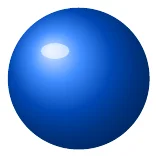
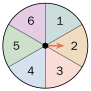
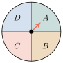
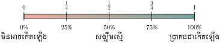

- កំណត់លទ្ធផលនៃវិញ្ញាសា
- កំណត់ប្រូបាបនៃព្រឹត្តិការណ៍មួយ
- បកស្រាយប្រូបាបដោយចំនួនទសភាគ និងភាគរយ ។
1. វិញ្ញាសា
គេយកសកម្មភាពផ្សេងៗខ្លះដូចខាងក្រោម :
ការបោះកាក់មួយដែលមានមុខពីរ ។
ការបោះគ្រាប់ឡុកឡាក់មួយដែលមានមុខ 6 ។
ការចាប់យកឃ្លីមួយចេញពីថង់ដែលមានឃ្លី 10 បង់លេខរៀង 1 ដល់ 10 ។

ការពិសោធប្រើថ្នាំអាស្ពីរីនដើម្បីព្យាបាលជម្ងឺឈឺក្បាល ។
ការតាមដានចំនួនរថយន្តដែលបានលក់ក្នុងរយៈពេល 30 ថ្ងៃ ។
ក្នុងប្រូបាប សកម្មភាពខ្លះដែលបានរៀបរាប់ខាងលើហៅថា វិញ្ញាសា ។
| ជាទូទៅ វិញ្ញាសាគឺជាសកម្មភាពដែលគេធ្វើដោយមិនបានដឹងពីលទ្ធផលជាមុន ។ |
2. លទ្ធផលនៃវិញ្ញាសា
គេបោះកាក់មួយ ។ កាក់អាចចេញខាងរូប ឬខាងលេខហៅថា លទ្ធផលនៃវិញ្ញាសា ។
គេបោះគ្រាប់ឡុកឡាក់មួយ ។ គ្រាប់ឡុកឡាក់អាចចេញលេខ 1, 2, 3, 4, 5, 6 ។ លេខ 1, 2, 3, 4, 5, 6 ហៅថា លទ្ធផលនៃវិញ្ញាសា ។
ថង់មួយមានឃ្លី 10 គ្រាប់ចុះលេខរៀងពី 1 ដល់ 10 ។ គេចាប់យកឃ្លី 1 គ្រាប់ ចេញដោយចៃដន្យ ឃ្លីដែលអាចចាប់បានមានលេខ \(\displaystyle 1, 2, 3, ... , 10\) ។ លេខ \(\displaystyle 1, 2, 3, ... , 10\) ហៅថា លទ្ធផលនៃវិញ្ញាសា ។
គេប្រើថ្នាំអាស្ពីរីនដើម្បីព្យាបាលជម្ងឺឈឺក្បាល ការព្យាបាលអាចមានពីរករណីគឺ ជាសះស្បើយនិងមិនជា ។ ជាសះស្បើយ ឬមិនជាហៅថា លទ្ធផលនៃវិញ្ញាសា ។
| ជាទូទៅ លទ្ធផលជាករណីទាំងអស់ដែលអាចកើតឡើងនៅក្នុងវិញ្ញាសាមួយដោយចៃដន្យ ។ |
3. ព្រឹត្តិការណ៍
បើគេបោះកាក់មួយបានខាងរូប នោះការបោះបានខាងរូបជា ព្រឹត្តិការណ៍ មួយដែលបានកើតឡើង ។
គេបោះគ្រាប់ឡុកឡាក់មួយ ។ ការបោះបានលេខ 5 ហៅថា ព្រឹត្តិការណ៍ ដែលបោះបានលេខ 5 ។
គេពិសោធប្រើថ្នាំព្យាបាលអ្នកជម្ងឺម្នាក់បានជាសះស្បើយ ការព្យាបាលបានសម្រេចជាព្រឹត្តិការណ៍មួយបានកើតមានឡើង ។
| ជាទូទៅ ព្រឹត្តិការណ៍ ជាលទ្ធផលដែលបានកើតមានឡើងដោយចៃដន្យ ។ |
ឬណាបោះគ្រាប់ឡុកឡាក់មួយ ។ ឬណាបោះបានលេខគូ ។ ចូរបញ្ជាក់ថាអ្វីជា វិញ្ញាសា ? ជាលទ្ធផល ? និងជាព្រឹត្តិការណ៍ ?
វិញ្ញាសា គឺជាការបោះគ្រាប់ឡុកឡាក់មួយ ។
- លទ្ធផល : \(\displaystyle 1, 2, 3, 4, 5, 6\) ( មាន 6 ករណី ) ។
- ព្រឹត្តិការណ៍ : \(\displaystyle 2, 4, 6\) ( មាន 3 ករណី ) ។
ក្នុងថង់មួយមានប័ណ្ណអក្សរនៃពាក្យ MONDAY ។ ធីតាស្ទាបចាប់យកអក្សរមួយដោយចៃដន្យ ។ ធីតាចាប់បានអក្សរ O ។ តើអ្វីជាវិញ្ញាសា ? ជាលទ្ធផល ? និងជាព្រឹត្តិការណ៍ ?
វិញ្ញាសាគឺជាការចាប់យកអក្សរមួយពីថង់ដោយចៃដន្យ ។
- លទ្ធផល : M, O, N, D, A, Y ( មាន 6 ករណី ) ។
- ព្រឹត្តិការណ៍ : O ( មាន 1 ករណី ) ។
ក្នុងការបង្វិលថាសមួយដែលមាន 6 លេខ ( ដូចរូប ) ។ សុទីបង្វិលឱ្យចុងព្រួញចង្អុលចំលេខ 2 ។ ចូរសរសេរអ្វីជាវិញ្ញាសា ? ជាលទ្ធផល ? និងជាព្រឹត្តិការណ៍ ?

4. សញ្ញាណប្រូបាប
គេប្រាថ្នាបោះគ្រាប់ឡុកឡាក់ឱ្យចេញលេខគូ ។ រកផលធៀបរវាងចំនួនករណីនៃព្រឹត្តិការណ៍ស្របតាមបំណងប្រាថ្នានិងចំនួនករណីនៃលទ្ធផលដែលអាចកើតមានឡើង ។
- ព្រឹត្តិការណ៍ស្របតាមបំណងប្រាថ្នាមាន 3 ករណីគឺ 2, 4, 6 ។
- លទ្ធផលដែលអាចកើតមានឡើងមាន 6 ករណីគឺ 1, 2, 3, 4, 5, 6 ។
ផលធៀប \(\displaystyle \frac{3}{6} = \frac{1}{2}\) ជាសំណាង ឬប្រូបាបដែលបោះបានលេខគូ ។
គេបោះកាក់មួយដោយចង់បានខាងរូប ។ រកផលធៀបរវាងចំនួនករណីនៃព្រឹត្តិការណ៍ស្របតាមបំណងប្រាថ្នានិងចំនួនករណីនៃលទ្ធផលដែលអាចកើតមានឡើង ។
- ព្រឹត្តិការណ៍ស្របតាមបំណងប្រាថ្នាមាន 1 ករណីគឺ ខាងរូប ។
- លទ្ធផលដែលអាចកើតមានឡើងមាន 2 ករណីគឺ ខាងរូបនិងខាងលេខ ។
ផលធៀប \(\displaystyle \frac{1}{2}\) ជាសំណាង ឬប្រូបាបដែលបោះបានខាងរូប ។
គេពិសោធប្រើថ្នាំអាស្ពីរីនទៅព្យាបាលអ្នកជម្ងឺឈឺក្បាល ។ អ្នកដែលបានជាសះស្បើយមានចំនួន 85 នាក់ អ្នកដែលមិនជាសះស្បើយមានចំនួន 15 នាក់ ។ រកផលធៀបរវាងចំនួនករណីនៃព្រឹត្តិការណ៍ស្របតាមបំណងប្រាថ្នានិងចំនួនករណីនៃលទ្ធផលដែលអាចកើតមានឡើង ។
- ព្រឹត្តិការណ៍ស្របតាមបំណងប្រាថ្នាមាន 85 ករណី ។
- លទ្ធផលដែលអាចកើតមានឡើងមានចំនួន \(\displaystyle 85 + 15 = 100\) ករណី ។
ផលធៀប \(\displaystyle \frac{85}{100} = \frac{17}{20}\) ជាសំណាង ឬប្រូបាបដែលបានព្យាបាលអ្នកជម្ងឺបានជាសះស្បើយ ។
គេប្រាថ្នាបោះគ្រាប់ឡុកឡាក់ចេញលេខគូ ឬលេខសេស ។ រកផលធៀបរវាងចំនួនព្រឹត្តិការណ៍ស្របតាមបំណងប្រាថ្នានិងចំនួនលទ្ធផលដែលអាចកើតមានឡើង ។
- ព្រឹត្តិការណ៍ស្របតាមបំណងប្រាថ្នាមាន 6 ករណីគឺ 1, 2, 3, 4, 5, 6
- លទ្ធផលដែលអាចកើតមានឡើងមាន 6 ករណីគឺ 1, 2, 3, 4, 5, 6
ផលធៀប \(\displaystyle \frac{6}{6} = 1\) ជាសំណាង ឬប្រូបាបដែលបោះបានលេខគូ ឬលេខសេស ។
| ជាទូទៅ ប្រូបាបនៃព្រឹត្តិការណ៍មួយ ជាផលធៀបរវាងចំនួនករណីនៃព្រឹត្តិការណ៍ស្របតាម |
| បំណងប្រាថ្នានិងចំនួនករណីនៃលទ្ធផលដែលអាចកើតមានឡើង ។ |
ក្នុងការបង្វិលថាសមួយដែលមានអក្សរ \(\displaystyle A, B, C, D\) ( ដូចរូប ) ។ រកប្រូបាបដែលឱ្យចុងព្រួញចង្អុលត្រង់អក្សរ \(\displaystyle A\) ។
ព្រឹត្តិការណ៍ស្របតាមបំណងប្រាថ្នាមាន 1 ករណី លទ្ធផលដែលអាចកើតមានឡើងមាន 4 ករណី ប្រូបាបដែលចុងព្រួញចង្អុលត្រង់អក្សរ \(\displaystyle A\) គឺផលធៀប \(\displaystyle \frac{1}{4}\) ។ គេសរសេរ \(\displaystyle p( \text{អក្សរ } A ) = \frac{1}{4}\) ។

គេបោះគ្រាប់ឡុកឡាក់មួយ ។ រកប្រូបាបនៃព្រឹត្តិការណ៍បោះបានលេខពហុគុណនៃ 2 ។
គ្រាប់ឡុកឡាក់មានលេខ 1, 2, 3, 4, 5, 6 ។ លទ្ធផលដែលអាចកើតមានឡើងមាន 6 ករណី លេខដែលជាពហុគុណនៃ 2 មាន : 2, 4, 6 ។ ព្រឹត្តិការណ៍ដែលបោះបានលេខជាពហុគុណនៃ 2 មាន 3 ករណី ។
ប្រូបាបនៃព្រឹត្តិការណ៍បោះបានលេខជា ពហុគុណនៃ 2 គឺផលធៀប \(\displaystyle \frac{3}{6} = \frac{1}{2}\) ។ គេអាចសរសេរ \(\displaystyle P(\text{គូ}) = \frac{3}{6} = \frac{1}{2}\) ។
សន្លឹកប័ណ្ណមួយត្រូវបានជ្រើសរើសដោយចៃដន្យពីសន្លឹកប័ណ្ណដែលមានបង់លេខពី 1 ដល់ 9 ។ រកប្រូបាបនៃព្រឹត្តិការណ៍ដែលជ្រើសរើសបានសន្លឹកប័ណ្ណមានលេខជាពហុគុណនៃ 3 ។
5. ការតាងប្រូបាបដោយប្រើចំនួនទសភាគ និងភាគរយ
គេបោះគ្រាប់ឡុកឡាក់មួយ ។ រកប្រូបាបនៃព្រឹត្តិការណ៍បោះបានលេខសេស ។
គ្រាប់ឡុកឡាក់មានលេខ 1, 2, 3, 4, 5, 6 ។ លទ្ធផលដែលអាចមានឡើងមាន 6 ករណី
គ្រាប់ឡុកឡាក់មានលេខសេស 1, 3, 5 ។
ព្រឹត្តិការណ៍ដែលបោះបានលេខសេសមាន 3 ករណី ដូចនេះ ផលធៀបឬប្រភាគ \(\displaystyle \frac{3}{6}\) ជាប្រូបាបនៃព្រឹត្តិការណ៍បោះបានលេខសេស ។ គេអាចសរសេរប្រូបាបនេះជាចំនួនទសភាគនិងភាគរយគឺ \(\displaystyle \frac{3}{6} = \frac{1}{2} = 0.5 = 50 \%\)
គេកុំអាចបោះគ្រាប់ឡុកឡាក់មួយឱ្យចេញលេខ 7 បានឡើយ ។ ផលធៀបរវាងព្រឹត្តិការណ៍ស្របតាមបំណងប្រាថ្នានិងលទ្ធផលដែលអាចកើតមានឡើងស្មើ 0 ។ គេសរសេរ \(\displaystyle P(7) = 0\) ។
បើព្រឹត្តិការណ៍មួយមិនអាចកើតមានឡើង ប្រូបាបនៃព្រឹត្តិការណ៍នោះមានតម្លៃស្មើនឹង 0 ។
ចំពោះការបោះគ្រាប់ឡុកឡាក់មួយ ។ ប្រូបាបនៃព្រឹត្តិការណ៍ដែលចេញលេខគូ ឬលេខសេសស្មើនឹង 1 ជានិច្ច ព្រោះព្រឹត្តិការណ៍ស្របតាមបំណងប្រាថ្នាមាន 6 ករណីនិងលទ្ធផលដែលអាចកើតមានឡើងមាន 6 ករណី។ គេសរសេរ \(\displaystyle P(\text{គូ ឬ សេស}) = 1\) ។
ការតាងប្រូបាបជាភាគរយតាងឱ្យក្ដីសង្ឃឹមនៃព្រឹត្តិការណ៍មួយអាចកើតមានឡើង ។ ការសង្ឃឹមមានកម្រិតដូចខាងក្រោម :

| មិនអាចកើតឡើង | សង្ឃឹមតិច | សង្ឃឹមស្មើ ឬពាក់កណ្ដាល | សង្ឃឹមខ្លាំង | ប្រាកដជាកើតឡើង |
| \(\displaystyle \bullet\) | \(\displaystyle \bullet\) | \(\displaystyle \bullet\) | \(\displaystyle \bullet\) | \(\displaystyle \bullet\) |
| \(\displaystyle P = 0 = 0 \%\) | \(\displaystyle P = \frac{1}{4} = 0.25 = 25 \%\) | \(\displaystyle P = \frac{1}{2} = 0.5 = 50 \%\) | \(\displaystyle P = \frac{3}{4} = 0.75 = 75 \%\) | \(\displaystyle P = 1 = 100 \%\) |
- ប្រូបាបនៃព្រឹត្តិការណ៍មួយមានតម្លៃស្មើ 0 មានន័យថា ព្រឹត្តិការណ៍នោះមិនអាចកើតឡើង ។
- ប្រូបាបនៃព្រឹត្តិការណ៍មួយមានតម្លៃស្មើ 0.25 មានន័យថា សង្ឃឹមតិចអាចកើតមានឡើង ។
- ប្រូបាបនៃព្រឹត្តិការណ៍មួយមានតម្លៃស្មើ 0.5 មានន័យថា សង្ឃឹមស្មើអាចកើតមានឡើង ។
- ប្រូបាបនៃព្រឹត្តិការណ៍មួយមានតម្លៃស្មើ 0.75 មានន័យថា សង្ឃឹមខ្លាំងអាចកើតមានឡើង ។
- ប្រូបាបនៃព្រឹត្តិការណ៍មួយមានតម្លៃស្មើ 1 មានន័យថាព្រឹត្តិការណ៍នោះប្រាកដជាកើតមាន ។
ក្នុងថង់មួយមានប័ណ្ណអក្សរនៃពាក្យ BANANA ។ គេលូកចាប់យកអក្សរដោយចៃដន្យ ។ រកប្រូបាបដែលចាប់បានអក្សរនីមួយៗដោយឱ្យចម្លើយជាប្រភាគ ជាចំនួនទសភាគ រួចជាភាគរយ ។
ក្នុងពាក្យ BANANA មានអក្សរ :
- \(\displaystyle B\) ចំនួន 1 នោះព្រឹត្តិការណ៍ចាប់បានអក្សរ \(\displaystyle B\) មាន 1 ករណី
- \(\displaystyle NN\) ចំនួន 2 នោះព្រឹត្តិការណ៍ចាប់បានអក្សរ \(\displaystyle N\) មាន 2 ករណី
- \(\displaystyle AAA\) ចំនួន 3 នោះព្រឹត្តិការណ៍ចាប់បានអក្សរ \(\displaystyle A\) មាន 3 ករណី
អក្សរទាំងអស់មាន 6 តួ នោះលទ្ធផលដែលអាចកើតមានឡើងមាន 6 ករណី
ដូចនេះ ប្រូបាបដែលចាប់បានអក្សរ \(\displaystyle B\) គឺ \(\displaystyle P(B) = \frac{1}{6} = 0.17 = 17 \%\) ។
ប្រូបាបដែលចាប់បានអក្សរ \(\displaystyle N\) គឺ \(\displaystyle P(N) = \frac{2}{6} = \frac{1}{3} = 0.33 = 33 \%\) ។
ប្រូបាបដែលចាប់បានអក្សរ \(\displaystyle A\) គឺ \(\displaystyle P(A) = \frac{3}{6} = \frac{1}{2} = 0.5 = 50 \%\) ។
ក្នុងវិញ្ញាសាបោះកាក់មួយអាចចេញអក្សរ \(\displaystyle H\) និង \(\displaystyle T\) ។ បើគេឱ្យធីតាបោះកាក់នោះ 2 ដង តើគេសង្ឃឹមប៉ុន្មានភាគរយដើម្បីបោះបានអក្សរ \(\displaystyle T\) ។
ធីតាបោះកាក់នោះ 2 ដង :
លទ្ធផលដែលអាចកើតមានឡើងមាន 4 ករណីគឺ \(\displaystyle TT, TH, HH, HT\) ដូចនេះព្រឹត្តិការណ៍ស្របតាមបំណងប្រាថ្នាមាន 3 ករណីគឺ \(\displaystyle TH, HT, TT\) ។
ដូចនេះប្រូបាបដែលបោះបានអក្សរ \(\displaystyle T\) កំណត់ដោយ \(\displaystyle P(T) = \frac{3}{4} = 0.75 = 75 \%\) មានន័យថាក្នុងការបោះកាក់ 2 ដង ធីតាមានសង្ឃឹមដល់ទៅ \(\displaystyle 75 \%\) ដើម្បីបោះបានអក្សរ \(\displaystyle T\) ។
ថង់មួយមានឃ្លីពណ៌ក្រហម 6 ឃ្លីពណ៌ស 5 ឃ្លីពណ៌បៃតង 8 និងឃ្លីពណ៌លឿង 3 ។ គេចាប់យកឃ្លីមួយចេញពីថង់ដោយចៃដន្យ ។
រកប្រូបាបដែលគេចាប់បានដោយឱ្យចម្លើយជាប្រភាគ ជាចំនួនទសភាគនិងភាគរយ :
- ក. ឃ្លីពណ៌ក្រហម
- ខ. ឃ្លីពណ៌ស
- គ. ឃ្លីពណ៌បៃតង
- ឃ. ឃ្លីពណ៌លឿង
លំហាត់
ក្នុងចំណោមសកម្មភាពខាងក្រោម តើមួយណាជាវិញ្ញាសា ?
- ក. គេបោះកាក់មួយ
- ខ. គេបោះគ្រាប់ឡុកឡាក់មួយដែលចេញតែមុខលេខ 6
- គ. គេចាប់ឃ្លីមួយគ្រាប់ចេញពីថង់
- ឃ. ឃ្លាទាំងអស់ខាងលើ ។
ក្នុងចំណោមសកម្មភាពខាងក្រោម តើមួយណាគឺជាលទ្ធផលនៃវិញ្ញាសា ?
- ក. គេបោះគ្រាប់ឡុកឡាក់មួយ
- ខ. គ្រាប់ឡុកឡាក់ចេញលេខគូ
- គ. ប្រាក់កាក់ចេញខាងរូប
- ឃ. ឃ្លាទាំងអស់ខាងលើ ។
ក្នុងចំណោមសកម្មភាពខាងក្រោម តើមួយណាគឺជាព្រឹត្តិការណ៍ ?
- ក. គេបោះគ្រាប់ឡុកឡាក់មួយ
- ខ. គ្រាប់ឡុកឡាក់ចេញលេខសេស
- គ. គេបោះកាក់មួយ
- ឃ. ឃ្លាទាំងអស់ខាងលើ ។
- ក្នុងថង់មួយមានប័ណ្ណអក្សរនៃពាក្យ SCHOOL ។ ធីតាលូកចាប់យកប័ណ្ណអក្សរមួយដោយចៃដន្យ ។ ធីតាចាប់បានអក្សរ \(\displaystyle H\) ។ ចូរសរសេរអ្វីជាវិញ្ញាសា? ជាលទ្ធផល ? និងជាព្រឹត្តិការណ៍ ?
ANGKOR ជាឈ្មោះនៃប្រាសាទអង្គរ ជាភាសាអង់គ្លេស
- ក. បើគេចាប់យកស្រៈមួយពីឈ្មោះនេះ ចូរសរសេរអ្វីជាវិញ្ញាសា ? ជាលទ្ធផល ? និងជាព្រឹត្តិការណ៍ ?
- ខ. បើគេចាប់យកព្យញ្ជនៈមួយពីឈ្មោះនេះ ចូរសរសេរអ្វីជាវិញ្ញាសា ? ជាលទ្ធផល ? និងជាព្រឹត្តិការណ៍ ? ។
- សន្លឹកប័ណ្ណមួយត្រូវបានជ្រើសរើសដោយចៃដន្យពីសន្លឹកប័ណ្ណដែលមានលេខពី 1 ដល់ 11 ។ រកប្រូបាបសន្លឹកប័ណ្ណដែលចាប់បានជាលេខសេស ។
- ក្នុងកន្ត្រកផ្លែឈើមួយមាន ផ្លែក្រូច 3 ផ្លែប៉ោម 2 និងផ្លែស្វាយ 5 ។ គេលូកចាប់យកផ្លែឈើមួយដោយចៃដន្យ ។ រកប្រូបាបដែលចាប់បានផ្លែឈើនីមួយៗដោយឱ្យចម្លើយជាប្រភាគ ជាទសភាគ រួចជាភាគរយ ។
ថង់មួយមានឃ្លីពណ៌ក្រហម 20 គ្រាប់ ឃ្លីពណ៌ស 45 ឃ្លីពណ៌បៃតង 30 និងឃ្លីពណ៌លឿង 5 ។ គេចាប់យកឃ្លីមួយចេញពីថង់ដោយចៃដន្យ ។ រកប្រូបាបនៃព្រឹត្តិការណ៍ខាងក្រោម :
- ក. ឃ្លីពណ៌ក្រហម
- ខ. ឃ្លីពណ៌ស
- គ. ឃ្លីពណ៌បៃតង
- ឃ. ឃ្លីពណ៌លឿង ។
គេបោះកាក់មួយ គេចង់ឱ្យវាបោះបានខាងរូប ។
- ក. បើគេបោះម្ដង តើប្រូបាបដែលបោះបានខាងរូបមានប៉ុន្មានភាគរយ ?
- ខ. បើគេបោះពីរដង តើប្រូបាបដែលបោះបានខាងរូបមានប៉ុន្មានភាគរយ ?
- គ. បើគេបោះបីដង តើប្រូបាបដែលបោះបានខាងរូបមានប៉ុន្មានភាគរយ ?
ការសិក្សាលើការលក់រថយន្តនៅក្រុមហ៊ុនមួយមានទិន្នន័យ ជារៀងរាល់ថ្ងៃប្រូបាបដែលលក់បានរថយន្តមួយគ្រឿងគឺ 0.20 ពីរគ្រឿងគឺ 0.40 បីគ្រឿងគឺ 0.20 បួនគ្រឿងគឺ 0.05 ហើយលក់មិនដាច់សោះគឺ 0.10 ។
តាង \(\displaystyle x\) ជាចំនួនរថយន្តដែលបានលក់ជារៀងរាល់ថ្ងៃ ហើយ \(\displaystyle P(x)\) ជាប្រូបាបលក់ គេមានតារាងបំណែងចែកប្រូបាប ។
- ក. តើប្រូបាបនៃការលក់រថយន្តមានតម្លៃប៉ុន្មាន ?
- ខ. តើប្រូបាបនៃការលក់រថយន្តមានតម្លៃទាបជាងគេ ?
\(\displaystyle x\) \(\displaystyle P(x)\) 0 0.10 1 0.20 2 0.45 3 0.20 4 0.05 ក្នុងក្រុមហ៊ុនមួយគ្រួសារចំនួន 30 នាក់ដែលមានកូន 1 នាក់ គ្រួសារ 43 នាក់មានកូន 2 នាក់ គ្រួសារ 10 នាក់មានកូន 3 នាក់ ហើយគ្រួសារ 4 នាក់មានកូនលើសនេះ ។ តាង \(\displaystyle x\) ជាចំនួនកូន ហើយ \(\displaystyle P(x)\) ជាប្រូបាបដែលមានចំនួនកូនស្មើនឹង \(\displaystyle x\) ។
បំពេញតារាងបំណែងចែកប្រូបាបខាងក្រោមនៃប្រូបាបចំនួនកូន ។
\(\displaystyle x\) \(\displaystyle P(x)\)
ខ្លឹមសារ៖ សៀវភៅពុម្ពគណិតវិទ្យាថ្នាក់ទី៧ របស់ក្រសួងអប់រំ យុវជន និងកីឡា · វាយអត្ថបទ គូររូបភាពឡើងវិញ និងរៀបចំលើអនឡាញដោយលោកគ្រូ សាន សុខលី សម្រាប់ការសិក្សាដោយឥតគិតថ្លៃ និងមិនរកប្រាក់ចំណេញ។ មិនមែនជាការបោះពុម្ពផ្លូវការរបស់ក្រសួងទេ។